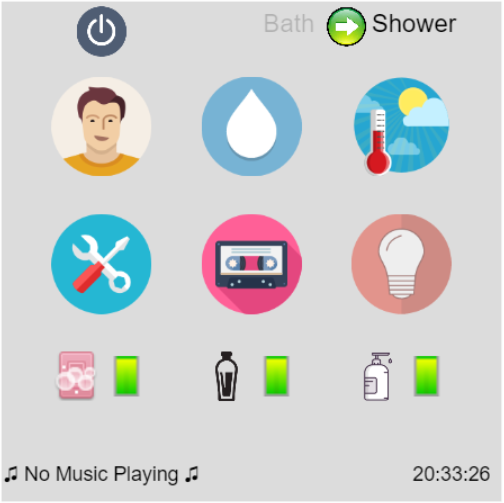

The application is based on a touch screen panel which allows the user to interact and take control. This tutorial will step by step guide on using the application.
The green button the main screen toggles between switching on and off the shower. Switching on activates all current controls and the water starts flowing through the upper or lower (whicherver selected) outlet.
A simple indicator switch allows the user to switch between bath and shower. The text displayed makes the selection comfortable.
If you have a pre feeded profile, just click the user button and select your profile. All your default settings will be applied. A guest account as well as a new account can be added.
If it's a warm day today and you want a chilled bath, contrary to your usual settings, just click the temperature icon to change water temeperature. Similarly, the quantity of flow can be changed.
If a friend from Spain or Mexico is visiting you, and he doesn't know much English, there's also an option to change the language. Click the settings button and toggle between English and Spanish.
Hit the music button to start playing. Choose your genre as per mood and also use the volume button to control the volume.
On the main menu, just hit the bulb button to switch on/off the shower light.
The user can just click the soap, shampoo and facewash icons to dispense liquids from the dispensers on the side wall. A green indicator against the three icons displays the amount of liquid left.
There is a switch on the back wall to plug in trimmers and other electronic devices.